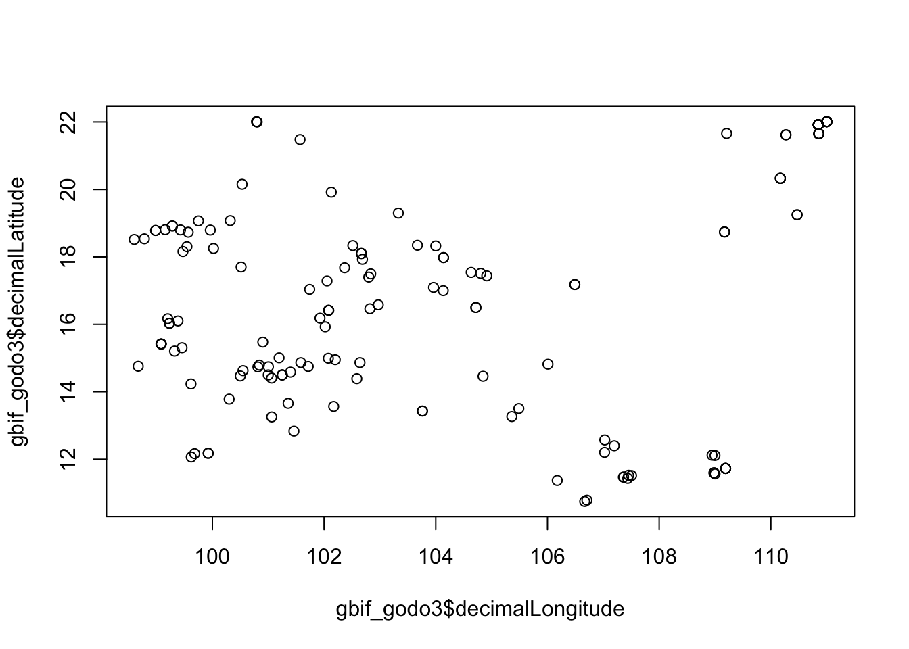
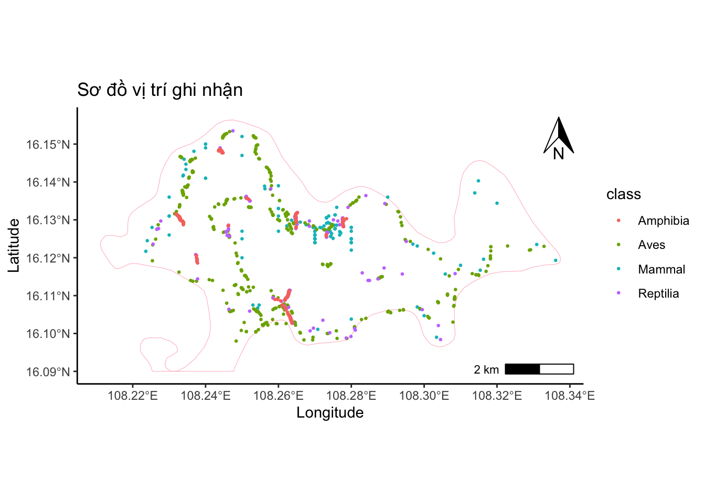
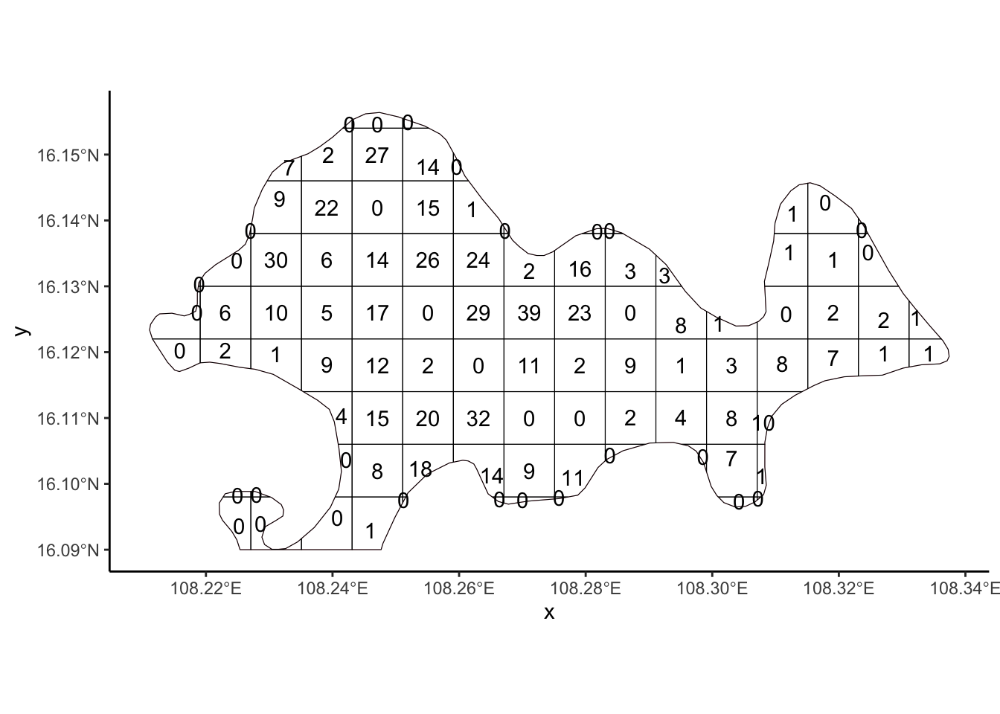
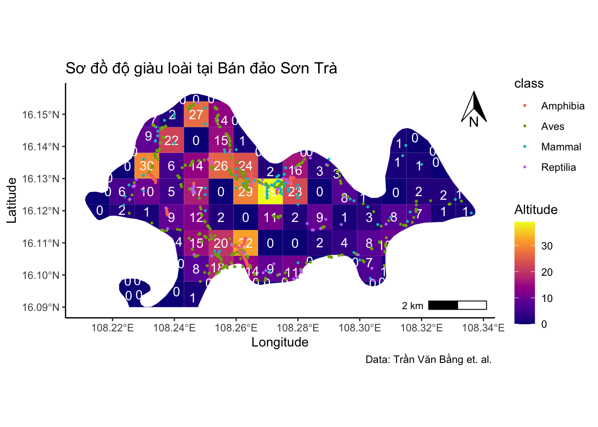

Phần 4 Thao tác cơ bản với tập tin bản đồ
4.1 Tập tin vector
Để xử lý các tập tin bản đồ, chúng ta sử dụng gói lệnh sf.
Tải tập tin bản đồ về địa phận tỉnh thành của Việt Nam được cung cấp từ https://data.opendevelopmentmekong.net/vi/dataset/a-phn-tnh.
Dùng lệnh st_read để đọc tập tin geojson vừa tải về. Lệnh này cũng có thể đọc tập tin *.shp.
sau đó xem nhanh bản đồ với lệnh plot
## Reading layer `Vietnamdiaphantinh' from data source
## `/Users/bachnguyen/Library/CloudStorage/OneDrive-Personal/WORKING/ECOR/DATA/Vietnamdiaphantinh.geojson'
## using driver `GeoJSON'
## Simple feature collection with 63 features and 3 fields
## Geometry type: MULTIPOLYGON
## Dimension: XY
## Bounding box: xmin: 102.1421 ymin: 6.953306 xmax: 116.9473 ymax: 23.3939
## Geodetic CRS: WGS 84Chúng ta có thể trích lọc thông tin bản đồ dựa vào bảng dữ liệu của bản đồ.
## [1] "gid" "code" "ten_tinh" "geometry"Ví dụ lọc bản đồ Thành phố Đà Nẵng
giới hạn phần đất liền
Lưu thành file .shp hoặc .geojson với lệnh st_write
## Updating layer `DaNang' to data source `DATA/DaNang.geojson' using driver `GeoJSON'
## Updating existing layer DaNang
## Writing 1 features with 3 fields and geometry type Multi Polygon.4.2 Tập tin dạng raster
Đối với dạng raster chúng ta sử dụng gói lệnh terra để đọc vào R
Mở tập tin bản đồ địa hình Việt Nam. Các bạn có thể tải tập tin DEM từ địa chỉ sau: http://marcchoisy.free.fr/srtm90.tif. Đây là bản đồ về cao độ của Việt Nam phần đất liền.
Cắt raster DEM_VN theo ranh giới Đà Nẵng với 2 lệnh crop và mask
DaNang_dem <- crop(VNDEM, DaNang) |>
mask(DaNang)
plot(DaNang_dem,xlim=c(107.8,108.4), ylim=c(15.9,16.3))
Lưu raster thành tập tin với lệnh writeRaster của gói terra
4.3 Biên tập bản đồ với gói lệnh ggplot và ggspatial
map1 <- ggplot(vietnam) +
geom_sf(color="grey", fill = "blue", alpha = 0.7, linewidth=0.05) +
theme_bw()
map1Thêm ký hiệu hướng bắc với hàm annotation_north_arrow của gói ggspatial. Chúng ta có thể chọn vị trí đặt ký hiệu bằng cách thay đổi location với các giá trị như “tl” cho “topleft”, “tr” cho “topright”, “br” cho “bottomright” và “bl” cho “bottomleft”.
library(ggspatial)
map1 +
annotation_north_arrow(location = "tr", height=unit(1, "cm"),width=unit(0.75, "cm"))
Chúng ta có thể thêm thước tỷ lệ với hàm annotation_scale()
map1 +
annotation_north_arrow(location = "tr", height=unit(1, "cm"), width=unit(0.75, "cm")) +
annotation_scale(location = "bl", width_hint = 0.5)Để vẽ lớp raster trong ggplot, chúng ta cần sử dụng lệnh geom_spatraster trong gói tidyterra
library(tidyterra)
ggplot()+
geom_spatraster(data=VNDEM)+
scale_fill_viridis_c(name = "Altitude", option = "viridis", alpha = 1, na.value = NA) +
geom_sf(data=vietnam,color="grey", fill=NA, linewidth=0.02 )+
theme_bw()Một tí màu mè
library(rnaturalearth)
#world_map
world <- ne_countries(scale = "medium", returnclass = "sf")
mycol <- "#fd8f24"
#plot
ggplot(world) +
geom_sf(fill = NA, color = mycol) +
geom_spatraster(data=VNDEM) +
scale_fill_viridis_c(name = "Altitude", option = "viridis", alpha = 1, na.value = NA) +
geom_sf(data = vietnam, fill = NA, linewidth=0.05) +
coord_sf(xlim = c(100,118), ylim = c(8,24)) +
scale_x_continuous(breaks = seq(100,114,4)) +
annotation_north_arrow(location = 'tr',
height = unit(1,"cm"), width = unit(0.75, "cm"),
style = north_arrow_fancy_orienteering) +
annotation_scale(location = "bl", width_hint = 0.2, height = unit(0.1,"cm"),
bar_cols = c(mycol, "white"), text_cex = 0.7,
line_col = mycol, text_col = mycol,
pad_x = unit(1, "cm"), pad_y = unit(0.2, "cm")) +
theme_bw() +
theme(panel.grid.major = element_line(size = 0.1, linetype = 'solid')) +
labs(x = "Longitude", y = "Latitude", title = "Việt Nam")
Đổi đơn vị sang UTM zone 49 mã “32649” với thông số datum trong lệnh coord_sf
ggplot() +
geom_sf(data = DaNang, fill = "grey") +
coord_sf(xlim = c(107.8,108.4), ylim = c(15.9,16.3), expand = FALSE, datum = 32649) +
theme_bw()